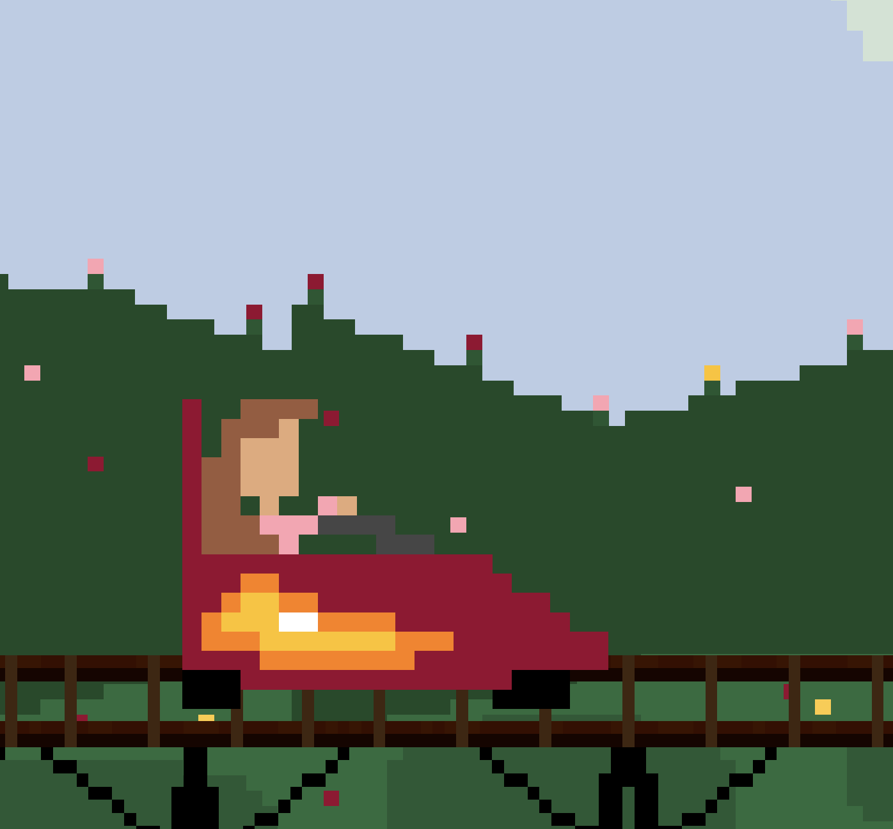
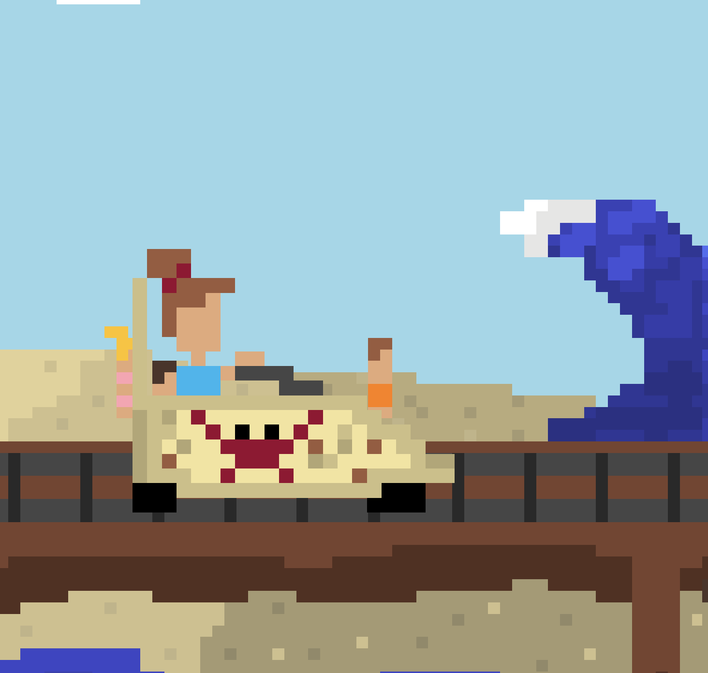
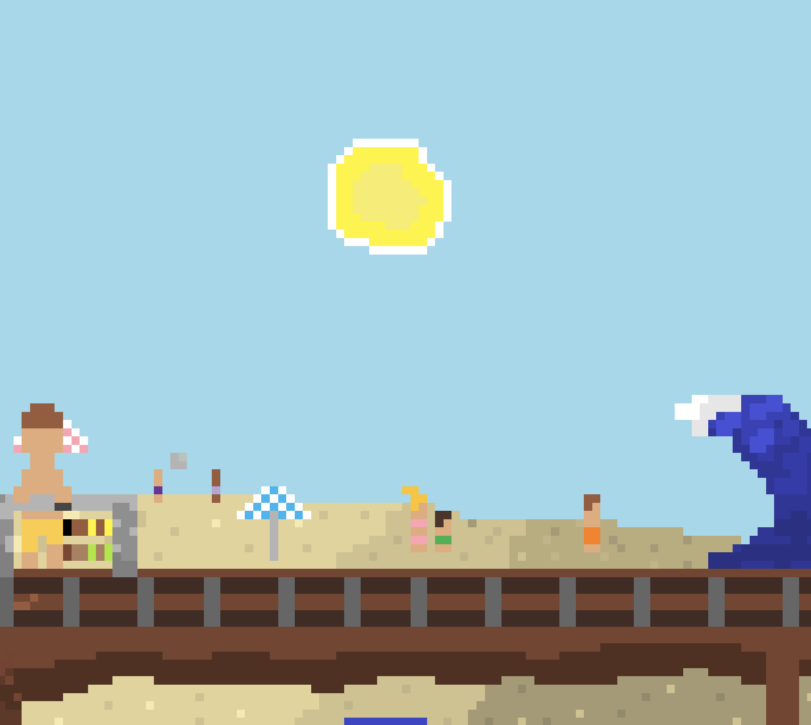

2D Pixel Arcade · Unity 6
01 · Game
You play as a theme park goer at a run-down amusement park which was once-beloved boardwalk attraction that's fallen into disrepair. The park's signature ride, the Carnage Coaster, hasn't had a proper inspection in years. Bolts are loose, birds have nested on the tracks and new challenges confront you at every different ride. The goal is to collect enough coins to advance to the next. Don't lose all your hearts before the timer runs out.
Each coaster starts the same way (from the platform with a queue line) and sits on a weathered platform. Each ride starts differently, but the platform is always very similar. The character only experiences small changes to their appearance depending on the location.
02 · Game World
The pixel art style keeps everything grounded and charming rather than dramatic. Characters and obstacles are small, readable, and expressive (a flapping bird, a wobbling puddle, a loose bolt skittering across the track). Backgrounds differ each ride (beach, poppy field, forest etc…). Each scene and character changes every new level.



The soundtrack should feel slightly chaotic (upbeat). Think acoustic instruments mixed with a bouncy melody that wouldn't feel out of place in Stardew Valley. Sound effects are tactile and cartoon-like. The coin pickup chimes bright and satisfying. Obstacle hits sound like a dull thunk. The wind rushing past as the cart picks up speed is constant, grounding the player in motion.
Stardew Valley is the primary visual reference because the pixel art feels handmade, warm, and full of small details that reward attention. Rollercoaster Tycoon sets the spatial and tonal reference: a theme park built by someone with enthusiasm but limited budget. The rides work, mostly. The atmosphere is cheerful chaos. The gameplay loop draws from Mario in the way that the player is constantly dodging objects/things to make it to the end of the ride.
03 · Development
Sprite / Dodge Animation
Implemented a three-frame dodge animation using SpriteRenderer sprite swapping — no Animator required. Pressing D triggers a crouch → flat sequence tied to the invincibility window.
Camera System
Replaced Cinemachine with a lightweight custom CameraFollow.cs. The camera smoothly trails the cart with a slight look-ahead offset, keeping upcoming track visible at all times.
Obstacle Hit & Flicker
A FlickerCoroutine toggles the player's SpriteRenderer on and off to signal damage. A 1-second invincibility window prevents repeated hits.
Coin Collection & Points
Coins are collected by pressing Space while overlapping a coin trigger. On collect, the coin spins and scales to zero before destroying itself. Points update live in the HUD.
Game Over States
Timer set to 60 seconds. On win or lose, the cart freezes completely — velocity zeroed, all coroutines stopped, sprite reset. Win screen offers a Next Level button; Lose screen offers Restart.
Instruction Screen
Game pauses on load via Time.timeScale = 0. An instructions panel shows controls. Pressing Space dismisses it and begins the ride.